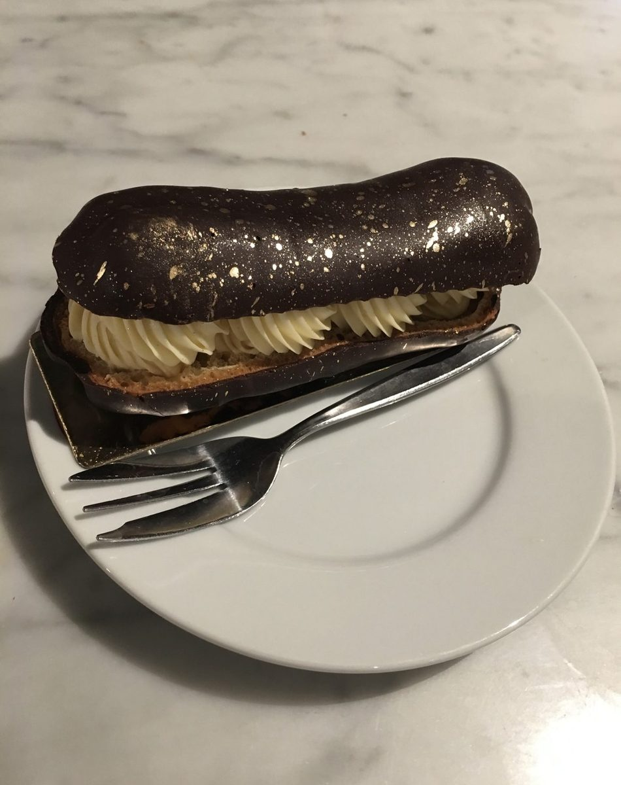

制作側の連想
「SORCIERE」と、とんがり帽子の型紙
店名の由来は分かりません。制作側は「SORCIERE」という綴りから、フランス語で魔女を意味する言葉を連想しました。魔女といえばとんがり帽子。あの帽子は、扇形の紙をくるりとまるめるとできあがります。そこでこのサイトは、円をぐるりと5等分した扇形(1枚あたり72°)を5ページに見立て、帽子の型紙のように並べています。お店の理念・由来とは無関係の、制作側の連想です。
三角に切り抜く
扇をまるめて、五つのとんがり。
写真は新発田市やお店のものではありません。洋菓子の雰囲気を伝えるための、国外・撮影地不明のフリー素材です。提供内容を示すものではありません。




ご案内
お店のこと(確認できたものだけ)
| 所在地 | 〒957-0062 新潟県新発田市富塚町3丁目1-12 |
|---|---|
| 電話 | なし |
| 営業時間 | 準備中 |
| 定休日 | 準備中 |
| ご予約 | 準備中 |
| 駐車場 | 準備中 |
| SNS | Instagram @sorciere.p |